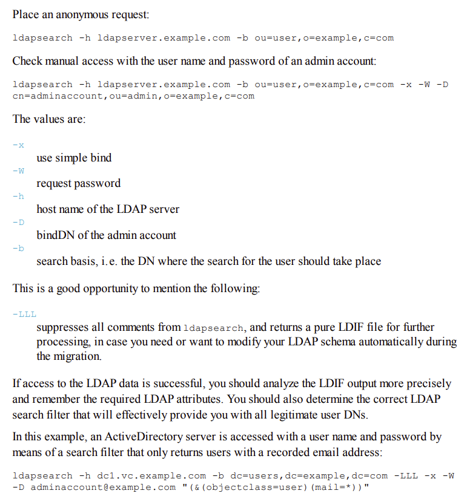

yum install -y openldap*
ldapsearch -h ccdc-ad.lab -b cn=users,dc=metro-ccdc,dc=lab -LLL -x -W -D cn=caleb,cn=users,dc=metro-ccdc,dc=lab
groupadd -g 10000 vmail
useradd -u 10000 -g 10000 -s /bin/false vmail
vi /etc/dovecot/dovecot-ldap.conf.ext
hosts = ccdc-ad.lab:389
ldap_version = 3
auth_bind = yes
dn = vmail
dnpass = changeME!
base = cn=users,dc=metro-ccdc,dc=lab
# scope = subtree
# deref = never
user_filter = (&(objectClass=organizationalPerson)(sAMAccountName=%n))
pass_filter = (&(objectClass=organizationalPerson)(sAMAccountName=%n))
pass_attrs = userPassword=password
# default_pass_scheme = CRYPT
user_attrs = =home=/home/vmail/%Ln/Maildir/,=mail=maildir:/home/vmail/%Ln/Maildir/,=uid=10000,=gid=10000
ln -s /etc/dovecot/dovecot-ldap.conf.ext /etc/dovecot/dovecot-ldap-userdb.conf.ext
vi +21 /etc/dovecot/conf.d/auth-ldap.conf.ext
userdb {
driver = ldap
+ args = /etc/dovecot/dovecot-ldap-userdb.conf.ext
- args = /etc/dovecot/dovecot-ldap.conf.ext
}
vi /etc/dovecot/conf.d/10-auth.conf
- !include auth-system.conf.ext
+ #!include auth-system.conf.ext
- #!include auth-ldap.conf.ext
+ !include auth-ldap.conf.ext

